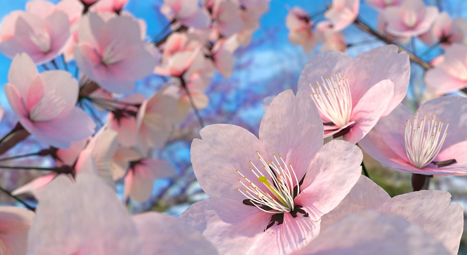

Japan is located in the Pacific Ring of Fire, around 70 percent of its surface is forested and mountainous: coastal areas are densely populated as a result. There are more than 100 active volcanoes and earthquakes, tsunamis are frequent phenomena along centuries.
Japanese nature reflects its geographical diversity. From Ryūkyū subtropical forests, to mild climate in the main islands, to coniferous forests and snow in northern islands. Wildlife includes over 90,000 species. Giant salamander and Japanese macaques are some curious representatives. Important areas of the country are preserved as national parks.
Subscribe to our YouTube channel and join the raffle for posters and Sushi meals!